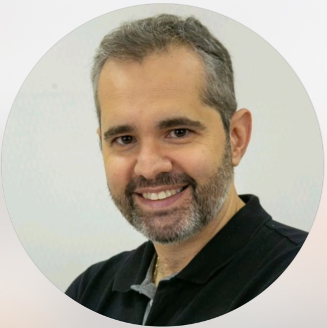
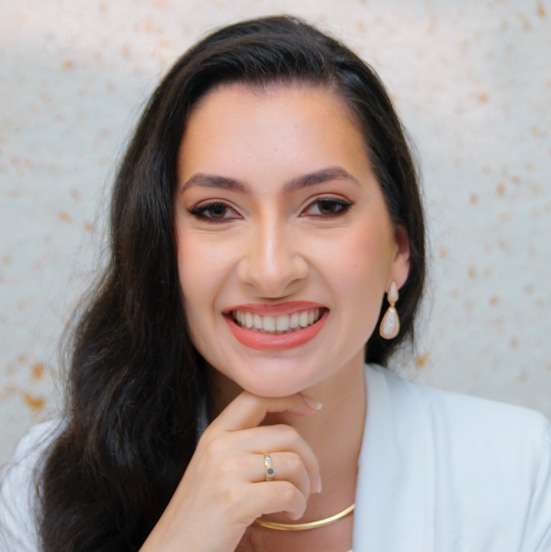
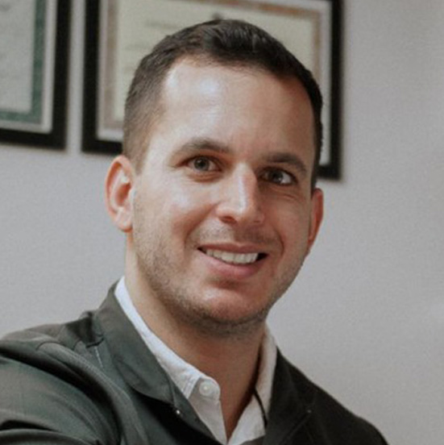
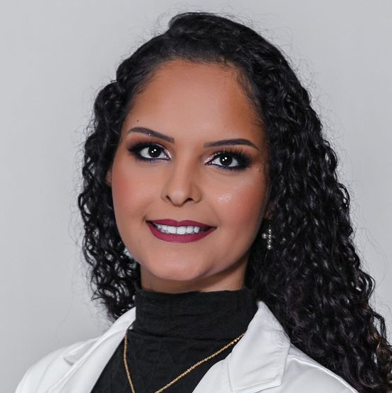
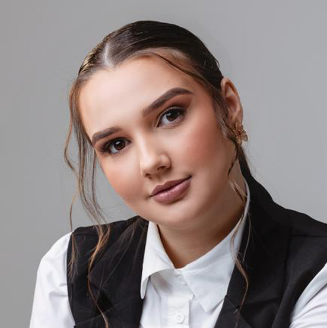
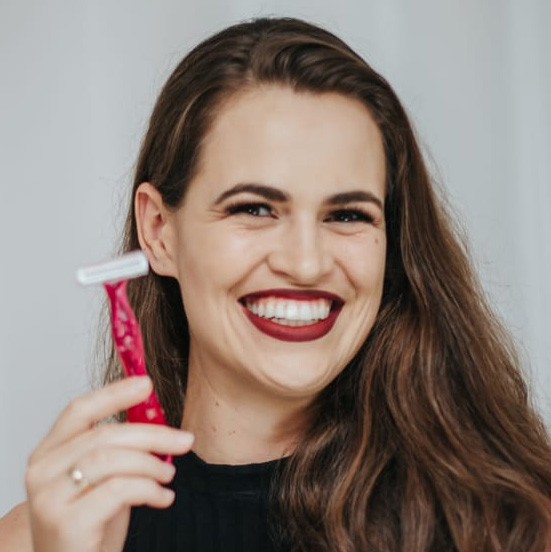

Nossa Equipe
Especialistas dedicados a oferecer o melhor da odontologia e estética com um olhar humanizado.

Dra. Bruna Biasutti
Reabilitação e Estética
Especialista em Reabilitação Oral, Próteses e Periodontia. Dedicada a construir bases sólidas para sorrisos duradouros.

Dr. Gustavo Daroz
Implantodontia
Especialista em reconstruções complexas e carga imediata. Sua prioridade é devolver a força e a estética aos dentes de seus pacientes.

Dra. Pâmela B. Pozzatti
Endodontia e Harmonização
Une técnica precisa e olhar estético para cuidar da sua saúde interna e beleza externa com naturalidade.

Dr. Natan Guss
Ortodontia
Especialista em Ortodontia e Invisalign. Focado em unir tecnologia digital e precisão clínica para construir sorrisos autênticos.

Dra. Micheli Arrivabene
Odontopediatria
Abordagem humanizada e lúdica. Especialista em conduzir os pequenos ao caminho da saúde com muito carinho e paciência.

Isabela Angeli
Biomedicina Estética
Especialista em saúde da pele e terapias avançadas. Sua dedicação é devolver o prazer de se olhar no espelho todos os dias.

Daniela Bueke
Estética e Bem-estar
Foco em tecnologias de laser que entregam liberdade e praticidade para sua rotina com máxima segurança e eficácia.